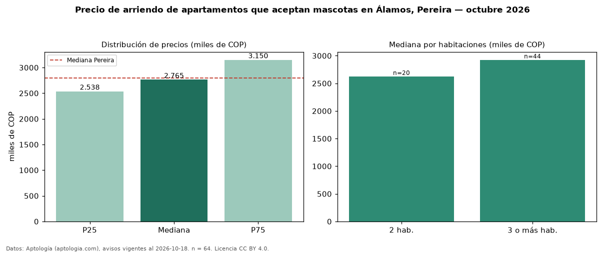

Precio de arriendo de apartamentos que aceptan mascotas en Álamos, Pereira — octubre 2026
En Álamos, Pereira, la mediana de canon mensual de apartamentos que aceptan mascotas es COP 2,77 millones, según 64 avisos vigentes. Prácticamente coincide con la mediana de todos los apartamentos en arriendo de Álamos (COP 2,75 millones, n = 183); este segmento reúne el 35 % de esos avisos. Por metro cuadrado, la mediana es COP 33.537/m² al mes (n = 63), 4 % por encima del conjunto de referencia (COP 32.278/m²). El área mediana anunciada es 86 m². El segmento con más oferta es el de 3 o más habitaciones (44 avisos, mediana COP 2,92 millones); pasar de 2 habitaciones a 3 o más habitaciones cambia la mediana +11 %. La administración mediana declarada es COP 460.000 al mes (n = 63), aparte del canon. El estrato más frecuente es 6 (92 % de los avisos con estrato). La mediana de todos los apartamentos en arriendo de Pereira es COP 2,80 millones (−1 % de diferencia). Datos: Aptología (aptologia.com), CC BY 4.0 — https://www.aptologia.com/arriendo/pereira/alamos. Archivos: PDF, CSV con las cifras y gráfica PNG.

| Avisos únicos | 64 |
|---|---|
| Percentil 25 | COP 2.537.500 |
| Mediana | COP 2.765.000 |
| Percentil 75 | COP 3.150.000 |
| Mediana por m² | COP 33.536 |
Fuente: avisos vigentes de portales inmobiliarios recopilados por Aptología, deduplicados (mínimo 30 avisos únicos por celda). Precios pedidos, no cerrados. Fecha: 2026-10-18.